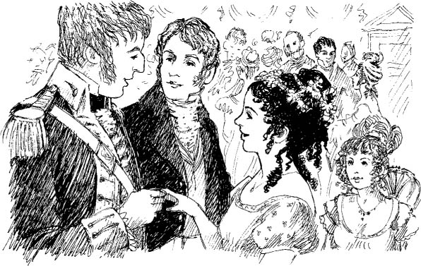
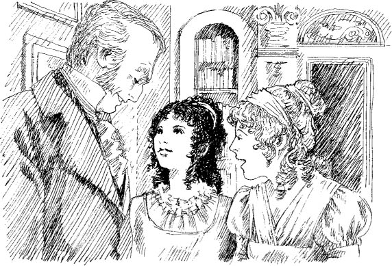

Đại úy Frederick Tilney
Hôm nay là tối thứ Sáu. Catherine cùng nhà Allens và nhà Thorpes dự tiệc ở Phòng trên.
Isabella nói. ‘Tôi sẽ không nhảy! James không ở đây. Tôi không muốn nhảy với người khác. Tôi sẽ ngồi và nghĩ về James thân yêu của tôi.’
Isabella nói: ‘Hôm nay đã nhận được một bức thư khác từ James nữa. Chúng tôi sẽ kết hôn, nhưng phải chờ hai năm nữa. Sau hai năm, James sẽ rời Oxford. Khi ấy anh ấy sẽ có chút tiền.’ Isabella buồn buồn nói.
Chẳng mấy chốc, Catherine nhìn thấy nhà Tilneys. Cùng họ có một người đàn ông cao lớn mặc quân phục. Henry giới thiệu người đàn ông này với Catherine.
Anh ấy nói: ‘Đây là anh trai tôi, Đại úy Frederick Tilney.’

Sau đó, Henry nhảy với Catherine. Catherine cảm thấy vui. Cô là bạn nhảy của Henry. Trong chốc lát, anh ta nói chuyện và Catherine lắng nghe anh ta.
Henry nói: ‘Cô Thorpe sẽ nhảy với Frederick.’
Catherine trả lời: ‘Ồ không, Isabella tối nay sẽ không nhảy. James không ở đây. Isabella sẽ kết hôn với James. Hôm nay cô ấy sẽ không nhảy với bất kỳ ai.’
Henry hỏi: ‘Cô ấy sẽ không nhảy sao? Cô chắc chứ?’ Anh ta mỉm cười.
‘Isabella nói với tôi: “Tối nay tôi sẽ không nhảy với bất kỳ ai.”’
‘Và cô đã tin cô ấy à!’
Vài phút sau, Isabella nhảy với Đại úy Tilney. Catherine ngạc nhiên lắm.
Khiêu vũ xong, Isabella ngồi xuống cạnh Catherine.
Isabella nói: ‘Tôi mệt lắm! Mà Đại úy Tilney lại nói nhiều quá. Tôi không muốn nhảy đâu.’
Catherine hỏi: ‘Thế sao cô lại nhảy?’
Isabella trả lời: ‘Đại úy Tilney đã mời tôi nhảy đến năm lần! Tôi không thể từ chối được. Anh ấy là một người đàn ông rất đẹp trai. Chúng tôi đã nhảy. Mọi người đều nhìn chúng tôi. Tôi không thích lắm. Nhưng hẳn James sẽ sớm trở lại Bath. Đến lúc đó tôi sẽ lại vui vẻ thôi.’

Một buổi tối nọ, Catherine đến nhà Tilneys ở Phố Milsom. Cô đã ở Bath gần sáu tuần rồi.
Catherine nói với Eleanor Tilney: ‘Thời gian trôi qua thật nhanh! Nhưng tôi có tin vui. Nhà Allens sẽ ở lại thêm hai tuần nữa. Và tôi sẽ ở cùng họ!’
Eleanor nói: ‘Ồ, tuần sau chúng tôi sẽ rời đi. Cha tôi muốn về Biệt thự Northanger.’
Catherine nói: ‘Tôi xin lỗi lắm.’ Đây quả là một tin buồn.
Eleanor nói: ‘Cha tôi—’
Nhưng đúng lúc đó, cha cô bước vào phòng.
Ông ta nói với Eleanor: ‘Con đã hỏi ý cô Morland chưa? Cô ấy có đồng ý không?’
Eleanor nói: ‘Catherine, cha tôi—và tất cả chúng tôi—muốn cô đến Biệt thự Northanger. Cô đồng ý chứ?’

Biệt thự Northanger! Cùng Henry và Eleanor!
Catherine vui mừng nói: ‘Cảm ơn ngài! Ngài thật tốt bụng. Tôi sẽ viết thư cho bố mẹ ngay.’
Nội dung
- Trang bìa
- Trang bản quyền
- Nội dung
- Ghi chú về tác giả
- Ghi chú về câu chuyện này
- Những nhân vật trong câu chuyện này
- 1 Catherine đến Bath
- 2 Những người bạn mới của Catherine
- 3 John và James
- 4 Buổi vũ hội tại Upper Rooms
- 5 'Tại sao anh lại nói dối em?'
- 6 Catherine và gia đình Tilney
- 7 Isabella đang yêu
- 8 Đại úy Frederick Tilney
- 9 Isabella và James
- 10 Tu viện Northanger
- 11 "Cô Morland thân mến!"
- 12 Ghé thăm Woodston
- 13 Một bức thư từ Isabella
- 14 Catherine về nhà
- 15 "Cô sẽ cưới tôi chứ?"